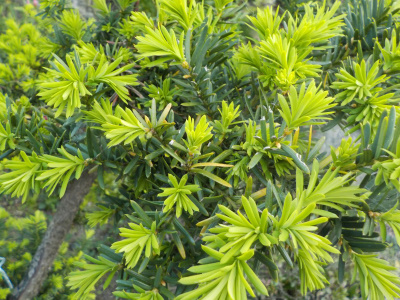
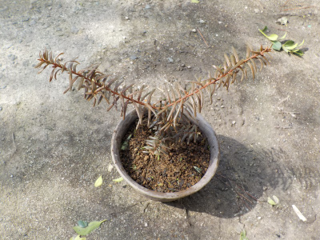
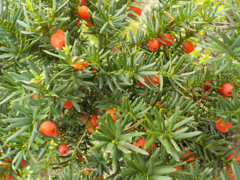
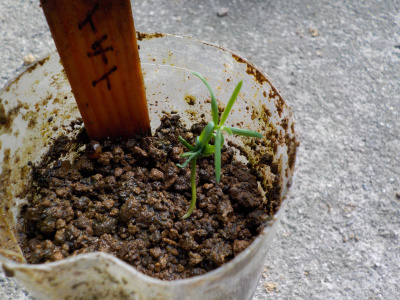
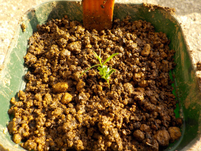
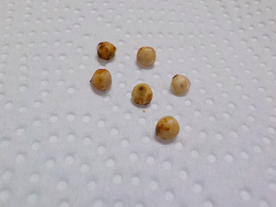
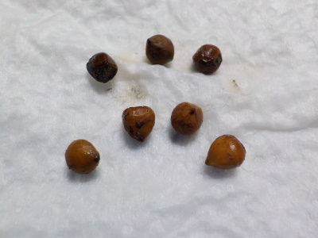
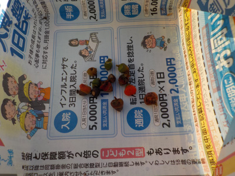

遊びで植物を育てよう
2023/04/17
イチイの新緑がとてもキレイでした。

古い濃い緑と新しい若い緑の組み合わせが綺麗だと思ったので写真を撮りました。
【イチイTOP】
【木TOP】
【園芸TOP】
2023/02/25
Ｙ字型のイチイを植え替えしました。

イチイが大きくなったので、鉢のサイズを大きくしました。
でも形がY字になっていて、なんだか不細工。
Y字のまま育ったら面白い形になりそうです。
【イチイTOP】
【木TOP】
【園芸TOP】
2021/10/23
イチイの実が沢山出来ています。

赤い実が沢山できました。
食べたら甘くて美味しかったです。
【イチイTOP】 【木TOP】 【園芸TOP】
2021/05/23
一昨年採ったイチイが発芽しました。

種蒔きしたイチイが発芽しました。
イチイは小さい時からイチイらしい姿です。

ペットボトルから出して小さい鉢に植替えしました。
秋になったらまた種を採って蒔こうと思います。
【イチイTOP】 【木TOP】 【園芸TOP】
2020/05/01
イチイの種の殻を割りました。

種に変化がないので殻を割りました。
ウォーターポンププライヤーで厚さを調整して挟むと潰さずに割れました。
便利な道具ですね。次から多用しようと思いました。
【イチイTOP】 【木TOP】 【園芸TOP】
2020/03/19
イチイの種が茶色くなりました。

もともと緑色かかっていたんですが、茶色くなりました。
枯れてしまったのかな？
【イチイTOP】 【木TOP】 【園芸TOP】
2019/11/23
イチイの種を収穫しました。
種から盆栽を作ってみたいと思い、イチイの種を採りました。

ネットで調べると、イチイは発芽が難しいみたいです。
とりあえず、冷蔵庫で保管することにしました。
【イチイTOP】
【木TOP】
【園芸TOP】
種には毒があるけど、甘くて美味しいイチイ。
【おいしいものを食べよう。】【たくさん寝よう。】
【ソロ活をしよう!】【季節感のあることをしよう。】【動画視聴はほどほどに。】【当サイトの全てのコンテンツは無断転載禁止です。】